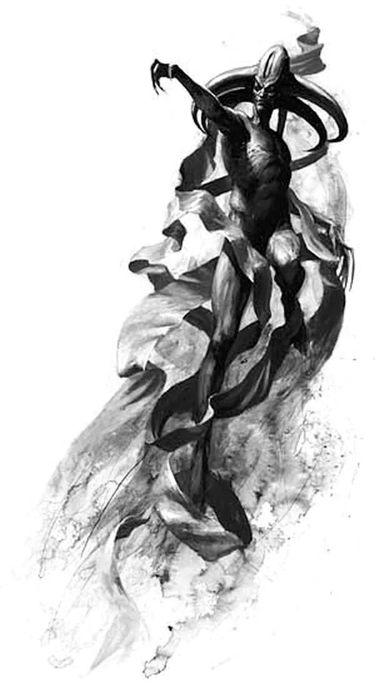
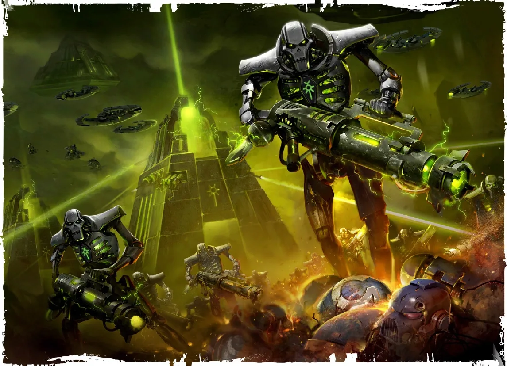
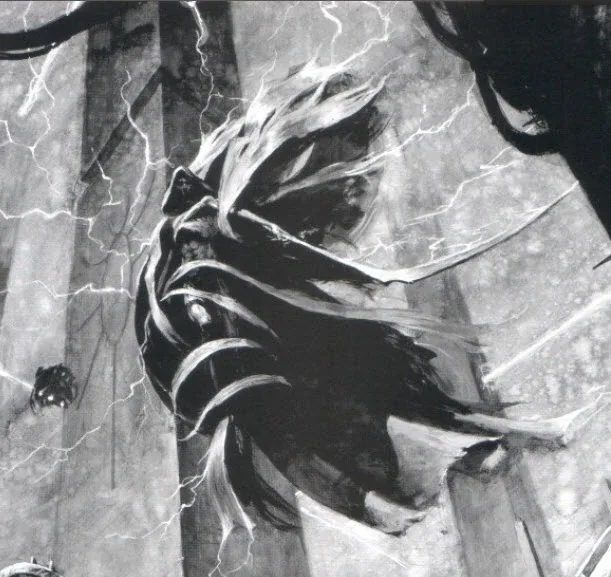
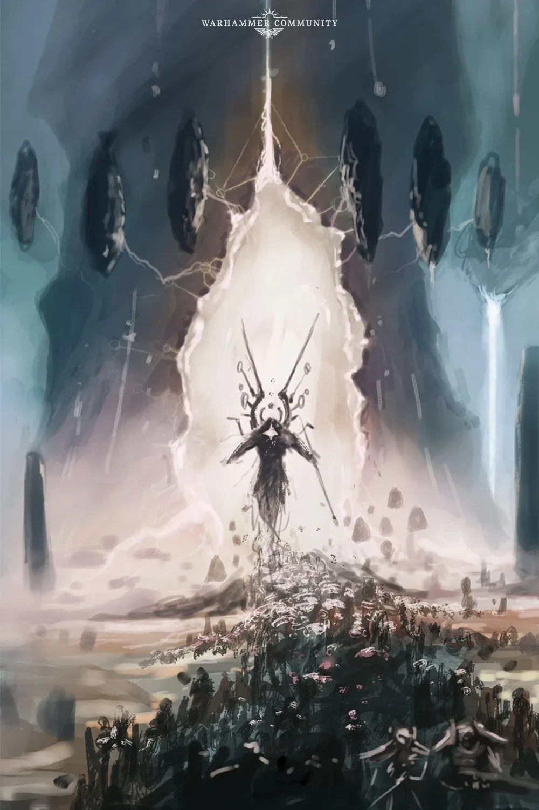
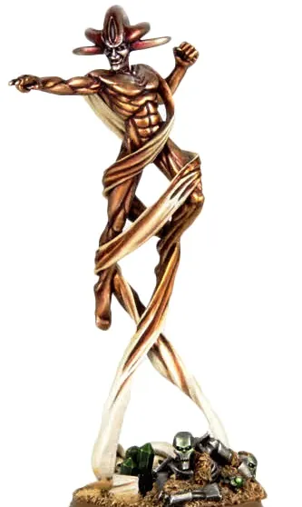
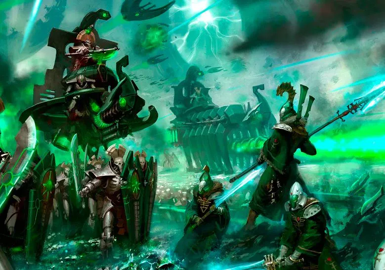
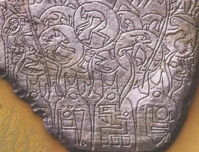
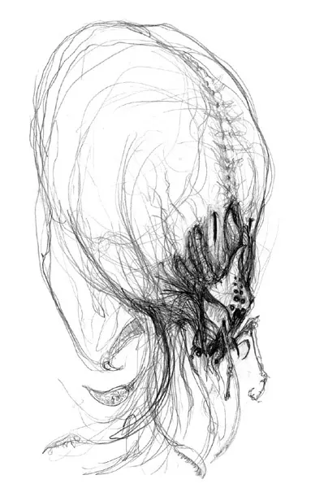

01ภาพรวม
War in Heaven (วอร์ อิน เฮฟเวน — "สงครามแห่งสวรรค์") คือสงครามที่เก่าแก่ที่สุดที่ถูกบันทึกในจักรวาล 40K เกิดขึ้นราว 60 ล้านปีก่อน ยุคปัจจุบัน — นานก่อนมนุษย์จะวิวัฒนาการบนโลก
ชื่อนี้มาจากตำนานของ Aeldari ส่วน Necron เรียกว่า "War of Aeons" ข้อมูลส่วนใหญ่มาจากตำนาน ซากโบราณ และความทรงจำของ Necron ที่ตื่นขึ้นมา จึงมีหลายส่วนที่คลุมเครือ แต่ผลของมันกำหนดกาแล็กซีมาจนถึงวันนี้
Old Ones
เผ่าโบราณที่เป็นอมตะและเชี่ยวชาญพลัง Warp สร้าง Webway เครือข่ายอุโมงค์ข้ามมิติ และเพาะพันธุ์สิ่งมีชีวิตมากมายทั่วกาแล็กซี เชื่อกันว่าเป็นสัตว์เลื้อยคลาน และ Slann อาจเป็นลูกหลานที่เสื่อมถอยของพวกเขา
Necrontyr
เผ่าที่เกิดใต้ดวงอาทิตย์ที่แผ่รังสีรุนแรง ทำให้มีอายุสั้นและป่วยตลอดชีวิต วัฒนธรรมจึงหมกมุ่นกับความตาย เมืองสร้างรอบสุสาน และอิจฉา Old Ones ที่เป็นอมตะ
02ต้นเหตุ: ความอิจฉาและความแตกแยก
Necrontyr ขยายอาณาจักรด้วยเรือที่ช้าและห้องหยุดเวลา จนครองส่วนใหญ่ของกาแล็กซี ปกครองโดย Triarch สภากษัตริย์สามองค์ ผู้นำสูงสุดเรียกว่า Silent King เพราะพูดผ่านกษัตริย์อีกสององค์เท่านั้น
เมื่อพบ Old Ones Necrontyr ขอความลับของความเป็นอมตะ แต่ Old Ones ปฏิเสธ ความแค้นจึงสะสม ขณะเดียวกันราชวงศ์ต่าง ๆ ของ Necrontyr ก็เริ่มรบกันเองใน "Wars of Secession" Triarch จึงหาศัตรูภายนอกมารวมชาติ — และไม่มีใครเหมาะกว่า Old Ones
สงครามที่ชนะไม่ได้
เทคโนโลยีของ Necrontyr เหนือกว่า แต่ Old Ones ใช้ Webway และประตู Warp เคลื่อนทัพได้ทันที Necrontyr ถูกตีถอยจนเหลือเพียงดินแดนที่แห้งแล้ง ราชวงศ์ต่าง ๆ เริ่มแยกตัวอีกครั้ง
การค้นพบ C'tan
นักวิจัยของ Necrontyr พบสิ่งมีชีวิตพลังงานมหาศาลที่อาศัยในดาวฤกษ์ที่กำลังจะตาย — C'tan หรือ "เทพดวงดาว" Necrontyr สร้างร่างโลหะ necrodermis ให้พวกมันสิงอยู่ C'tan จึงรับรู้โลกวัตถุและเริ่มหลงใหลพลังชีวิตของสิ่งมีชีวิต
The Deceiver และ Silent King Szarekh
C'tan ชื่อ Mephet'ran the Deceiver มาเสนอข้อตกลงต่อ Szarekh Silent King องค์สุดท้าย: ร่วมรบกับ Old Ones แล้วจะได้ความเป็นอมตะและความเป็นหนึ่งเดียว มีเพียง Orikan นักโหราศาสตร์ที่เตือนว่าข้อตกลงนี้จะ "ทำลายวิญญาณของชาว Necrontyr ไปตลอดกาล" แต่ไม่มีใครฟัง

03Biotransference: แลกวิญญาณกับความเป็นอมตะ
C'tan เสนอ "ของขวัญ" ชิ้นสุดท้าย — การย้ายจิตจากร่างเนื้อที่เจ็บป่วยไปสู่ร่างโลหะที่ไม่มีวันตาย ชาว Necrontyr ทั้งเผ่าเดินเข้าโรงหลอมขนาดยักษ์ ร่างกายถูกถอดออก จิตถูกย้ายไปสู่ร่าง necrodermis ขณะที่ C'tan บินวนเหนือเตาหลอมและกลืนกินวิญญาณของทั้งเผ่าพันธุ์
Szarekh ก้าวออกมาจากเตาหลอมและรู้ทันทีว่าทำอะไรลงไป — ร่างใหม่แข็งแกร่ง ความคิดชัดเจน แต่ภายในว่างเปล่า วิญญาณหายไปแล้ว Necrontyr ไม่มีอีกต่อไป เหลือเพียง Necron ผู้ไม่มีวันตาย ชนชั้นสูงบางคนยังมีความคิดเป็นของตัวเอง แต่ทหารส่วนใหญ่เหลือเพียงเครื่องจักรไร้จิตใจ

04Necron ครองกาแล็กซี
เมื่อ C'tan อิ่มพลังจากวิญญาณของทั้งเผ่า พวกมันแทบไม่มีใครหยุดได้ ดาวถูกเผา ดวงอาทิตย์ถูกดับ ระบบดาวทั้งระบบถูกหลุมดำกลืน C'tan ชื่อ Nyadra'zath ยังสอนวิธีเจาะเข้า Webway ผ่านประตูหินที่เรียกว่า Dolmen Gate ทำให้อาวุธที่ดีที่สุดของ Old Ones หันมาทำร้ายเจ้าของ
เผ่าพันธุ์เล็ก ๆ ทั่วกาแล็กซีกลายเป็น "ปศุสัตว์" ให้ C'tan กิน และในที่สุด C'tan ก็เริ่มรบกันเองและกลืนกินกันเองจนเหลือเพียงไม่กี่องค์ที่ทรงพลังที่สุด เช่น Nightbringer (ความตาย), Void Dragon (เครื่องจักร), Deceiver และ Outsider



05เผ่าพันธุ์ที่ Old Ones สร้างขึ้น
เมื่อสิ้นหวัง Old Ones ใช้วิทยาศาสตร์ด้านพันธุกรรมสร้างเผ่านักรบที่เชื่อมกับ Warp ได้แรงกว่าเดิม เพื่อสู้กับศัตรูที่ไร้วิญญาณ ผลงานของพวกเขาได้แก่:
Aeldari
เผ่าที่มีพลังจิตสูง กลายเป็นนักรบหลักที่ใช้ "เวทมนตร์" จาก Warp สู้กับเทคโนโลยีของ Necron และเกลียด Necron มาจนถึงวันนี้ (ดู Aeldari)
Krork
นักรบสงครามที่ถูกออกแบบมาเพื่อรบอย่างเดียว ลูกหลานที่เสื่อมถอยของพวกเขาคือ Ork ในปัจจุบัน — นั่นคือเหตุผลที่ Ork ชอบรบโดยกำเนิด
Jokaero
เผ่าลิงที่เลียนแบบเทคโนโลยีได้อย่างน่าทึ่ง
เผ่าอื่น ๆ
เช่น K'nib และ Rashan ซึ่งส่วนใหญ่สูญพันธุ์ไปแล้ว ดูเผ่าที่เหลือรอดได้ที่ เผ่าพันธุ์อื่น ๆ
พลังจิตของเผ่าเหล่านี้คือสิ่งที่ C'tan และ Necron ซึ่งไม่มีวิญญาณรับมือไม่ได้ อาณาจักรของ C'tan เริ่มแตก C'tan ที่เหลือจึงร่วมมือกันเป็นครั้งแรกในรอบล้านปี สร้างเสา Pylon ขนาดยักษ์เพื่อตัดโลกวัตถุออกจาก Warp — เสาที่ภายหลังพบบนดาว Cadia



06Enslaver Plague: Warp ตอบโต้
สงครามที่นองเลือดหลายล้านปีและพลังจิตของเผ่าใหม่ทำให้ Warp ปั่นป่วน วิญญาณนับไม่ถ้วนที่ตายในสงครามรวมตัวกันในทะเลแห่งวิญญาณ สิ่งที่เคยไร้รูปร่างใน Warp กลายเป็นนักล่า — อาณาจักรแห่ง Chaos เริ่มก่อตัวขึ้น
ภัยที่น่ากลัวที่สุดคือ Enslaver สิ่งมีชีวิตจาก Warp ที่ควบคุมจิตใจของ psyker และใช้เป็นประตูดึงพวกเดียวกันเข้ามา Old Ones ถูกโจมตีผ่านเผ่าที่ตนสร้างเอง ในที่สุดก็พ่ายแพ้ สูญพันธุ์ หรือหนีออกจากกาแล็กซี — ไม่มีใครรู้แน่ชัด

07การทรยศของ Silent King และ Great Sleep
ตลอดสงคราม Szarekh รอเวลา เขารู้ว่าถ้าลุกขึ้นต่อต้าน C'tan ระหว่างที่ Old Ones ยังอยู่ Necron จะต้องสู้สองศัตรูพร้อมกัน เมื่อ Old Ones พ่ายแพ้และ C'tan อ่อนล้า เขาจึงนำ Necron ก่อกบฏ ใช้อาวุธที่ Cryptek สร้างขึ้นเพื่อฆ่าเทพ
C'tan ตายไม่ได้จริง เพราะเป็นส่วนหนึ่งของโครงสร้างจักรวาล Szarekh รู้ข้อนี้ดี จึงแตก C'tan เป็นเศษนับพันชิ้น แล้วขังไว้ใน Tesseract Labyrinth — ชิ้นส่วนเหล่านี้คือ "C'tan Shard" ที่ Necron ใช้เป็นอาวุธในยุค 40K การกบฏครั้งนี้ทำให้ Necron ตายนับล้าน รวมถึงสมาชิก Triarch ทุกคนยกเว้น Szarekh
Szarekh มองเห็นว่ายุคของ Necron จบแล้วชั่วคราว Aeldari กำลังจะครองกาแล็กซี และ Enslaver ยังระบาด เขาจึงสั่งให้เมืองทั้งหมดกลายเป็นดาวสุสาน (Tomb World) และให้ทุกคนหลับใหล 60 ล้านปี รอให้ Aeldari เสื่อมสลาย จากนั้นเขาทำลายระบบควบคุมจิตที่ผูก Necron ทุกตนไว้กับเขา และเนรเทศตัวเองออกไปนอกกาแล็กซีด้วยความรู้สึกผิด
08มรดกในยุค 40K
- Necron ตื่นขึ้น — ในยุค 41 Tomb World ทยอยตื่น หลายดาวเสียหายจากกาลเวลา และ Necron บางตนเสียสติจากการหลับนาน ดู Necrons
- Silent King กลับมา — ในยุค Era Indomitus Szarekh กลับเข้ากาแล็กซีเพื่อรวมราชวงศ์ต่าง ๆ รับมือภัยของ Tyranid และ Chaos
- ความเกลียดชังโบราณ — Aeldari กับ Necron ยังเป็นศัตรูกัน Ork ยังรบเพราะถูกสร้างมาเพื่อรบ
- เสา Pylon ของ Cadia — เสาที่กดพลัง Warp ซึ่งเคยปกป้อง Cadian Gate มาหมื่นปี คือมรดกของสงครามนี้ (ดู Cadia ล่มสลาย)
- Webway — อุโมงค์ข้ามมิติของ Old Ones ยังคงอยู่ แม้จะพังเป็นส่วน ๆ และ Aeldari ใช้เดินทางมาจนถึงทุกวันนี้
09แหล่งข้อมูลและหมายเหตุ
เนื้อหาหน้านี้สรุปและแปลเป็นภาษาไทยจากบทความใน Warhammer 40k Wiki (Fandom) ซึ่งเรียบเรียงจากหนังสือ Codex, หนังสือชุด Horus Heresy ของ Forge World และนิยาย Black Library ด้านล่างนี้ (ตรวจสอบ ต.ค. 2026)
เนื้อเรื่อง Warhammer ถูกเขียนเพิ่มและแก้ไขมาตลอดหลายสิบปี ปี จำนวน และรายละเอียดบางจุดต่างกันไปตามหนังสือแต่ละเล่ม หน้านี้ใช้ฉบับที่แหล่งอ้างอิงส่วนใหญ่ยอมรับ และบอกไว้เมื่อมีหลายฉบับ